HOW NOT TO EVALUATE
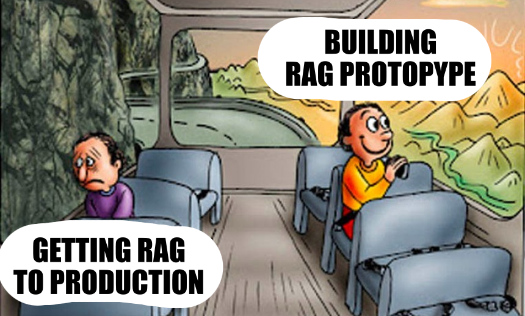
your RAG
Berlin Buzzwords 2025 | Roman Grebennikovwhoami
- PhD in CS, quant trading, credit scoring
- Findify: e-commerce search, personalization
- Delivery Hero: food search, LLMs
- Opensource: Metarank, lightgbm4j, flink-scala-api
Nixiesearch
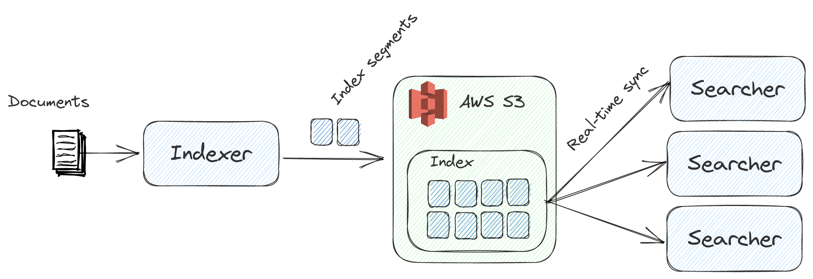- TLDR: Lucene search engine on top of S3
- Expected: facets, filters, autocomplete, RFF
- ML: embedding inference, cross-encoder ranking
- RAG: LLM inference via llamacpp
Perks of being open-source
- they: hey nice project!
- you: thanks! ❤️
- they: we use it for RAG in a bank with 3M customers
- they: and got some issues, can you help?
- you: hmm 🤔🤔🤔
The agenda

- intro: RAG as a support agent for support agents
- data: chunking and context length
- search+generation: the R and G in RAG
- tools: RAGAS, deepeval and why you should build your own
Support agent for support agents
80% of all questions are covered by FAQ
- 40%: answer immediately as you know the answer
- 40%: answer after checking FAQ/docs
- 20%: answer after internal discussion
Support agent for support agents
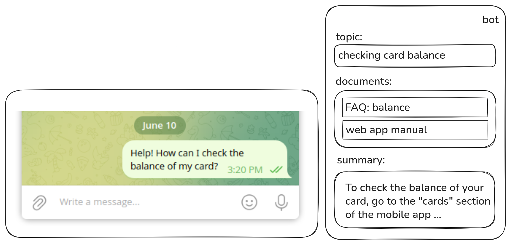- Still human: nobody likes chatting with ChatGPT
- Faster onboarding: just read the docs
RAG
- Dialogue: summarize to a query
- Retrieve: search for top-N relevant docs
- Summarize: answer the last question in the dialogue
Getting real
- FinTech: airgapped, you can't just use OpenAI API
- Languages: CIS region, Uzbek/Kazakh
- Knowledge base: what knowledge base?
wait is RAG solved thing in 2025?
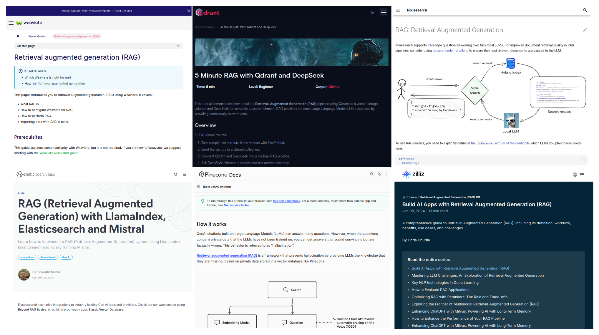Iteration #1
- LLM convert all docs to Markdown
- LangChain chunk, embed with multilingual-e5-small
- Qwen2.5 for summarization
CTO@k: it works but sucks
- Relevant docs missing, irrelevant found
- Wrong query (or summary) generated
CTO@k: it works but sucks
- R: Relevant docs missing, irrelevant found
- G: Wrong query (or summary) generated
Vibe-evaluating RAG
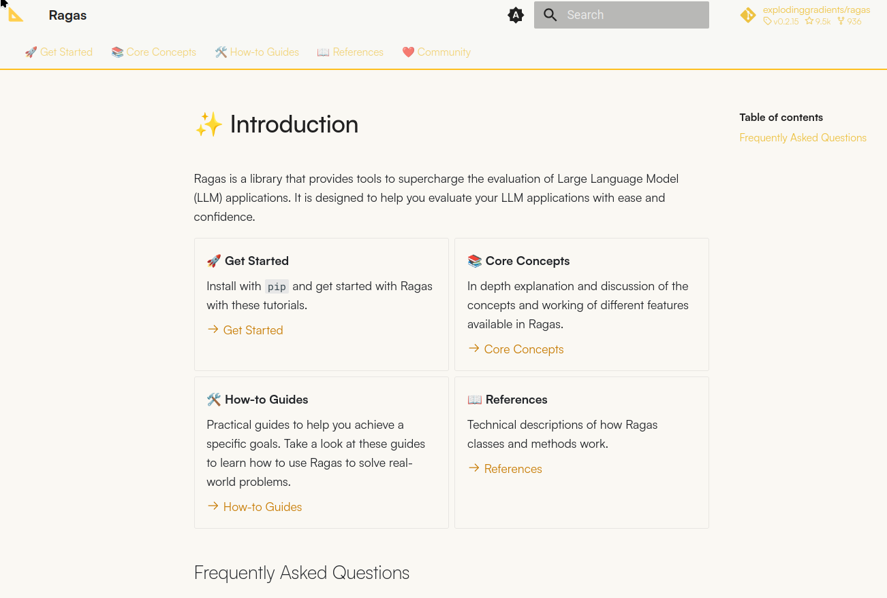TLDR: evaluate each RAG step separately
RAG as a system
preprocessing + retrieval + generation = RAG
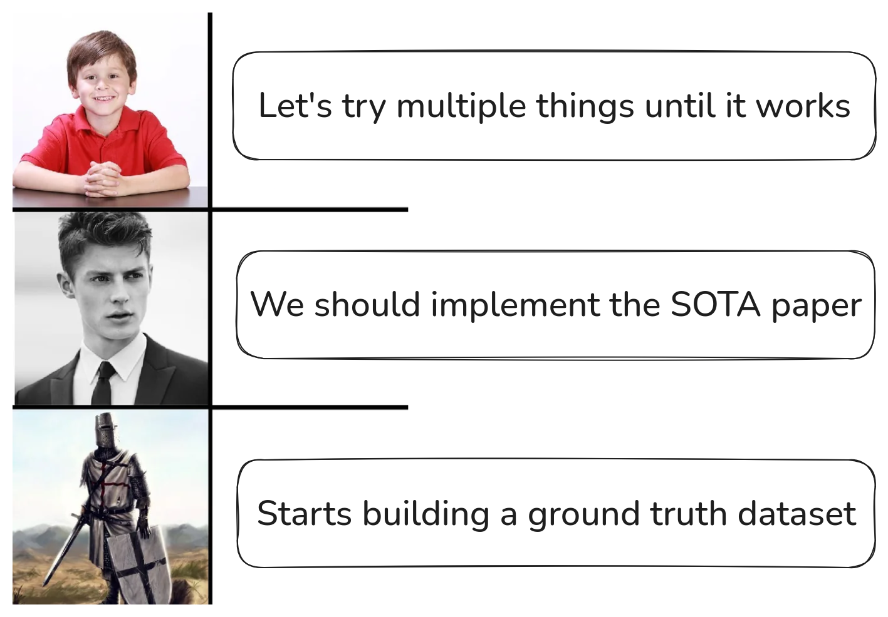decompose > evaluate > improve
Corpus preprocessing
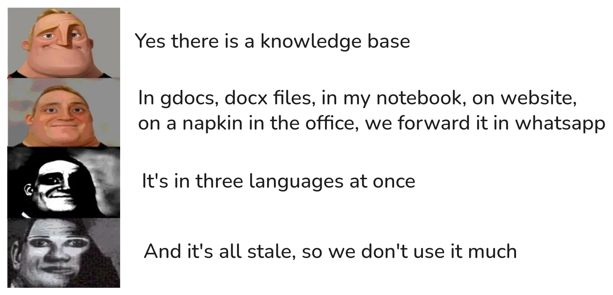Corpus preprocessing
- Local files: docx, pdf, txt, napkin scans
- Convert everything to markdown
Evaluating chunking
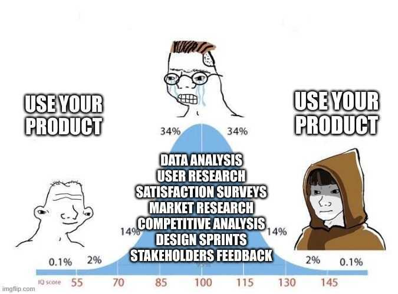
- chunking = the way you create corpus
- cannot label changing corpus 🙁
"vibe fixing"
Chunking: large vs small
- Large: embed complete documents
- Small: split docs to chunks
Problems of large chunking
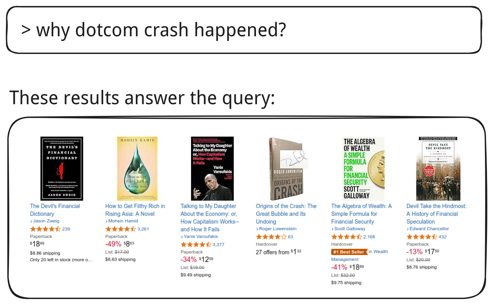Bad UX: no time to check, context too large
Problems of small chunking
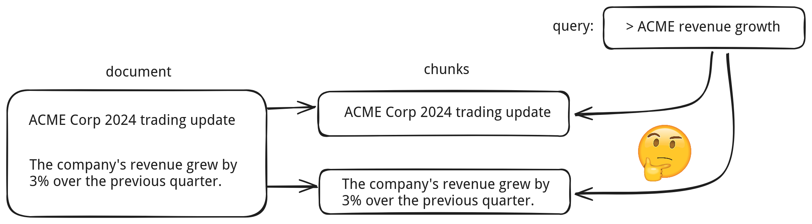Lost context due to over-chunking
Anthropic's contextual chunking
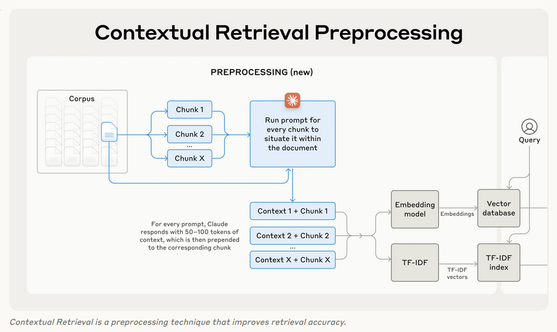Anthropic's contextual chunking
- LLM inference per chunk is expensive 🙁
- Yes but we have markdown titles 😃
GPU poor contextual chunking
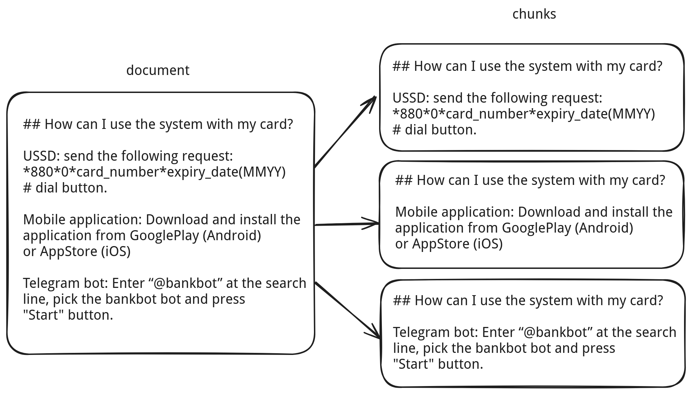Chunking TLDR
todo: who would win meme
- Chonkie, LangChain: 20+ options, frameworks, SaaS
"text here".split("\n\n")- Contextual: title + paragraph
R in RAG
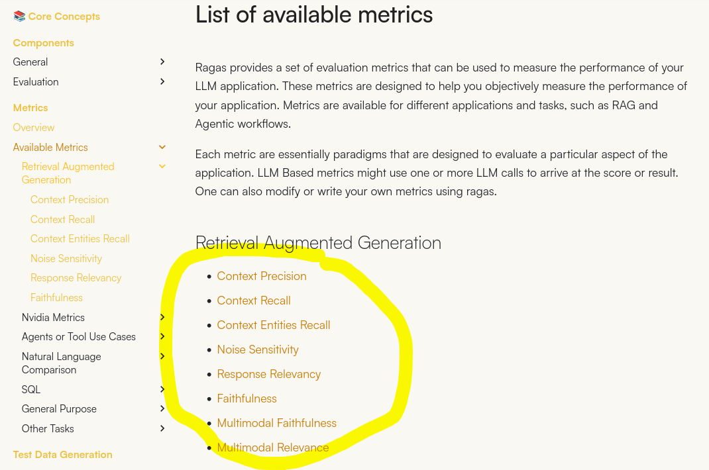todo: always has been meme